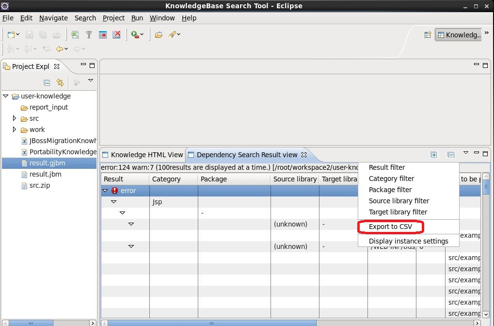

The following describes how to use the features TUBAME Reporting
-
Knowledge-Based Search
-
Open the Work Status view of the Knowledge-Based Search, it is confirmed that the following tasks have been completed
-
Visual check
-
Inquiry check
-
Degree of difficulty is Unknown Item(Rewriting status of code manually calculated by SE)
-
Code manually calculated by SE(Rewriting Step Line manually calculated by SE)
-
-
All tasks after completion, you run the "Delete items need not be ported" button in the menu editor of jbm file editor
-
Run in the menu of jbm file editor to "Export to CSV", and outputs a csv. And outputs it as knowhow_result.csv In this example
-
-
Dependency Search
Figure 4. Run in the menu of Dependency Search Result view to "Export to CSV", and outputs a csv. And outputs it as depends_result.csv In this example

![[Warning]](images/warning.png)
![[Important]](images/important.png)
![[Note]](images/note.png)